Formula 1-Style Steering Wheel
A yoke-style steering wheel with a built-in touchscreen and every driver control the car needs. It's 21% lighter than the previous wheel, adds 4 buttons, and is built from three waterjet-cut aluminum plates.
- My role
- Sole designer & builder
- Weight
- −21% vs. previous wheel
- Controls
- +4 buttons, touchscreen
- Safety factor
- 2.4 minimum

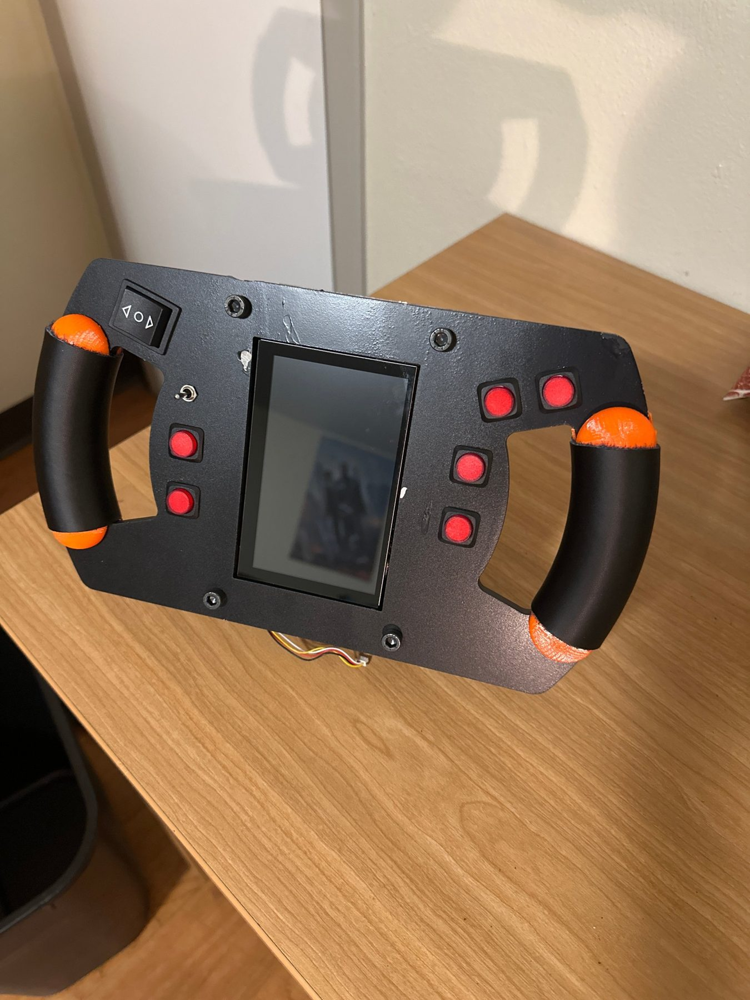

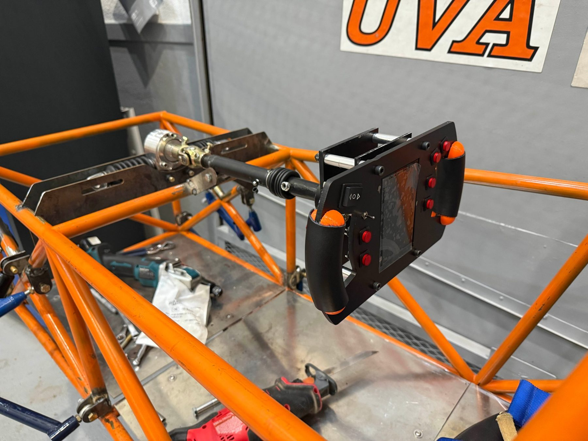
The problem
The car's data screen was on the dashboard, below a windshield that let in a lot of sunlight. In the sun, glare often made the screen unreadable, so the driver lost access to the performance data and alerts they needed during a race. The car's controls were also spread around the cabin, so the driver had to take a hand off the wheel to use them.
The old full-circle wheel also added weight and was awkward to use in the tight cabin. The new wheel had to work within these constraints:
- Regulations: American Solar Challenge (ASC) rules limit how much of a round wheel can be cut away at the top and bottom to make a yoke. They also require the driver to be able to get out of the car quickly.
- Loads: The wheel had to handle the driver's steering torque and accidental axial loads, such as the driver bracing against it.
- Environment: Constant vibration and humid race conditions meant fasteners couldn't loosen and parts couldn't corrode.
What I did
I designed the whole wheel myself in SolidWorks, then built and assembled it.
Screen and controls
The centerpiece is an STM32 touchscreen display built into the wheel. It shows car performance data and alerts, and the driver can swipe between pages. It sits 1 mm below the face of the wheel, which protects it from scratches.
All the controls are on the wheel, so the driver never has to let go of it:
- A turn signal button
- A 3-position momentary switch to raise and lower cruise control speed
- Latching and momentary push buttons for communications, horn, hazards, regenerative braking, cruise control on/off, and low-power mode

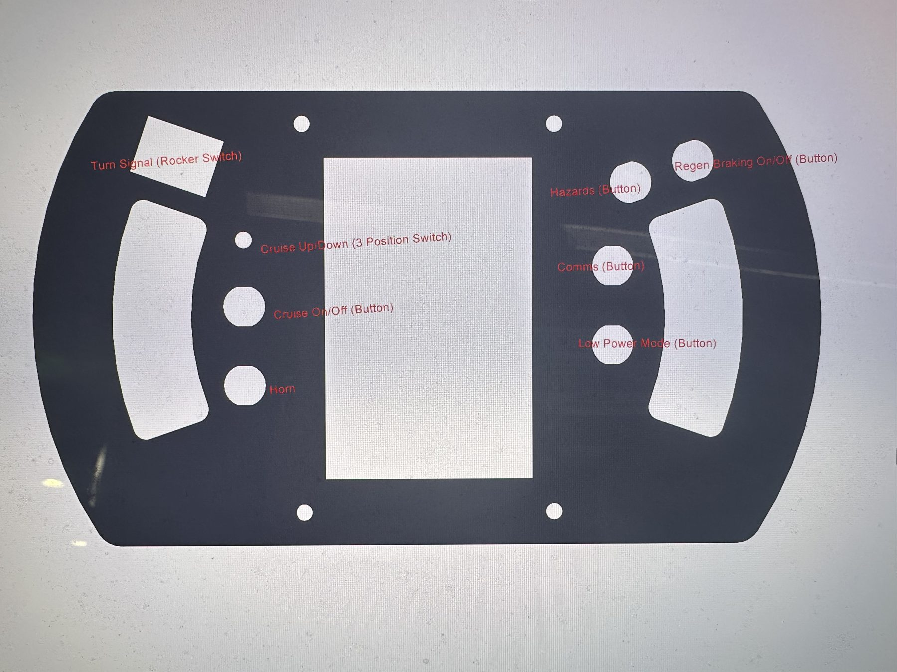
The yoke takes the full amount of cutaway the rules allow. That saves weight and makes the wheel easier to turn in the cramped cabin and easier to get past when climbing out.
Sandwich-plate design
The wheel is a stack of three waterjet-cut aluminum plates: 1/4″ front and back plates with a 1/8″ middle plate. Four M6 socket head bolts run through the whole stack. From front to back:
- Wheel plate (1/4″): the outer yoke shape, with the button holes and the opening for the screen.
- Short aluminum spacers on each M6 bolt.
- Middle plate (1/8″): holds the screen and the circuit board. The screen mounts to the front with three M3 bolts and small spacers. On the back, four M3 standoffs (screwed into threads I tapped by hand) hold the distribution board that all the buttons and the screen wire into.
- Longer aluminum spacers to make room for the wiring and the board.
- Back plate (1/4″): carries the two output connectors (CAN bus and horn) and the hex quick-release hub that attaches the wheel to the steering column.
- Lock nuts: four anti-vibration lock nuts clamp the whole stack together.
Every fastener is a socket head bolt, so the wheel comes apart with a single hex key. The two connectors are two-piece bulkhead types that screw together through the back plate. The quick-release hub is held on by three hex bolts. I drilled through their heads and safety-wired them so they can't back out.

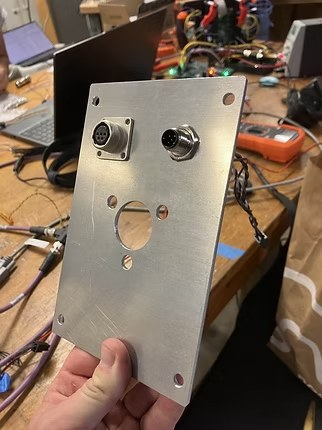

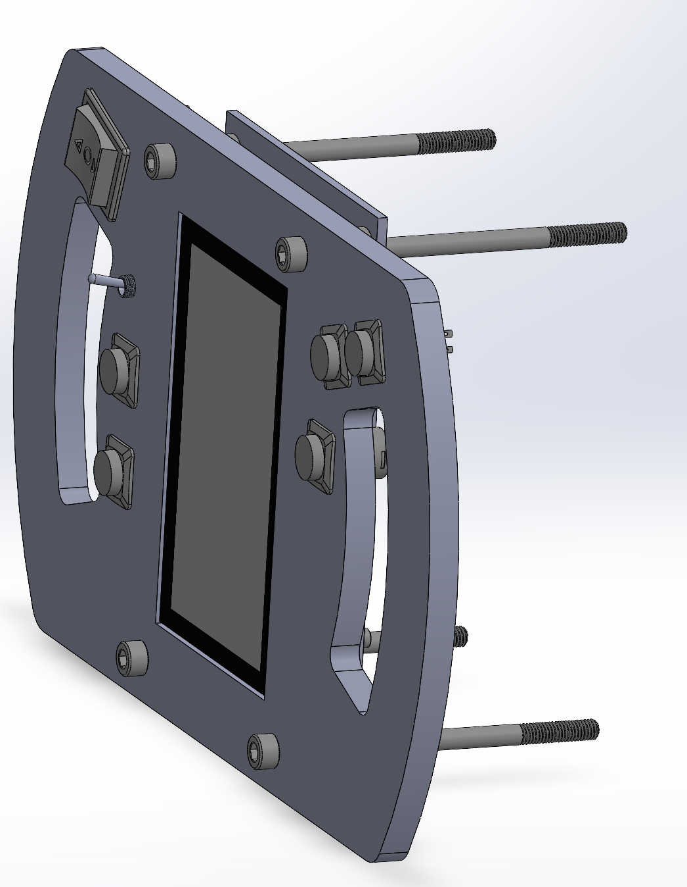

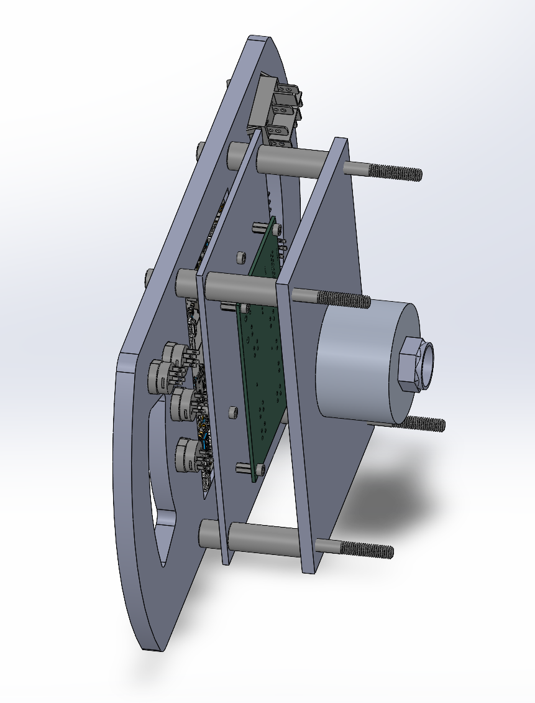

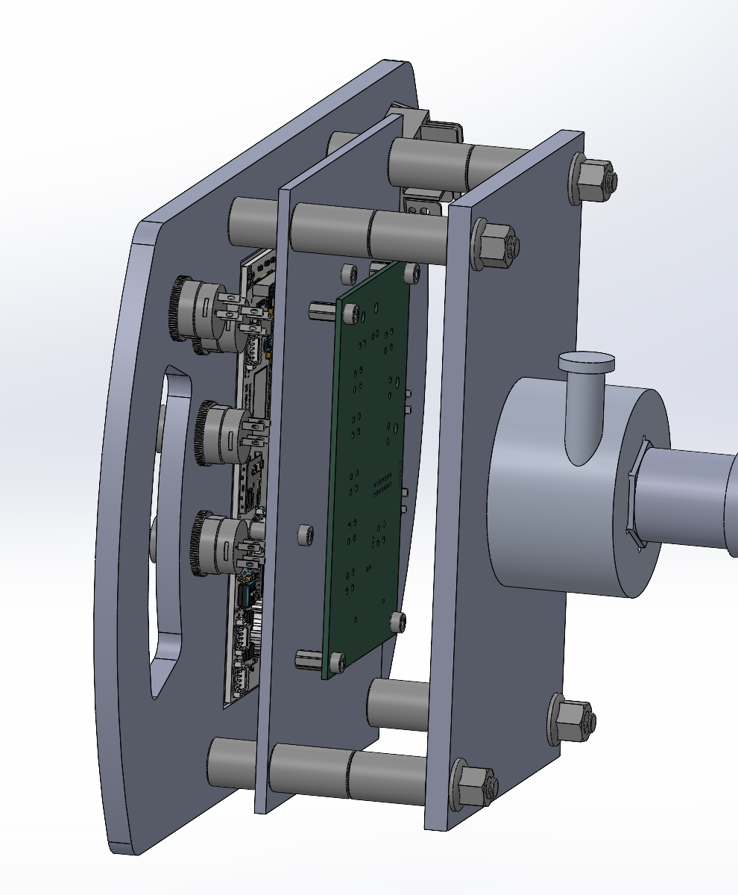
Design for manufacturing (DFM)
I put proper tolerances (GD&T) on every hole, cutout, and clearance hole, and designed each plate around the waterjet. Waterjet cutting did almost all of the work. The only other steps were hand-tapping the standoff holes and drilling the safety-wire holes.
I chose the bolts, standoffs, and spacers to meet ASC rules for resisting vibration, and picked corrosion-resistant coatings so they wouldn't rust in humid conditions.

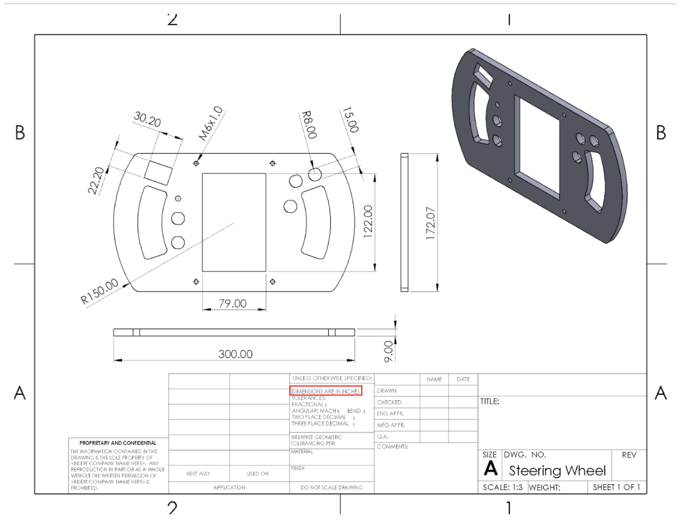
Stress analysis
I ran stress analysis for the driver's steering torque and for accidental axial loads. The design has a minimum safety factor of 2.4.
Finishing
After a test fit, I took the wheel apart, scuffed the aluminum plates, and gave them several coats of black protective paint. Once it was back together, I added 3D-printed grips that I designed and hand-stitched leather over them for a solid, comfortable grip.

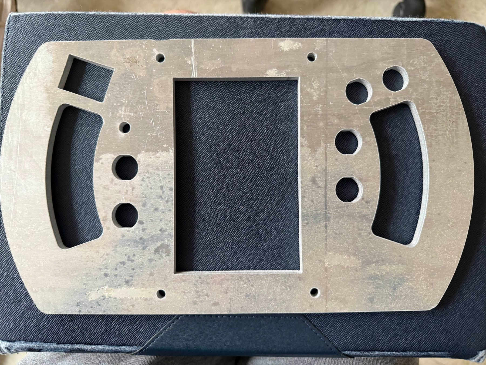

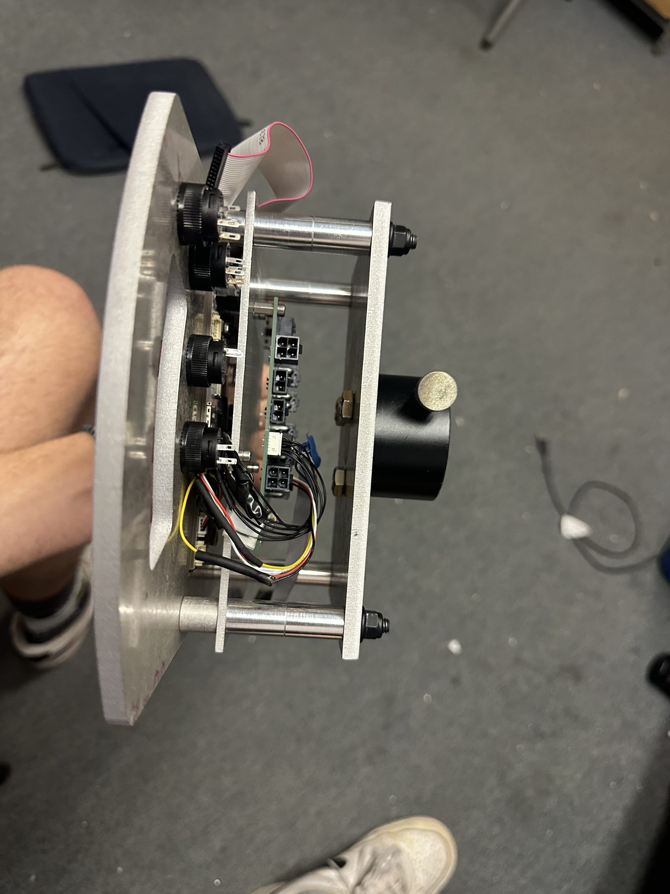

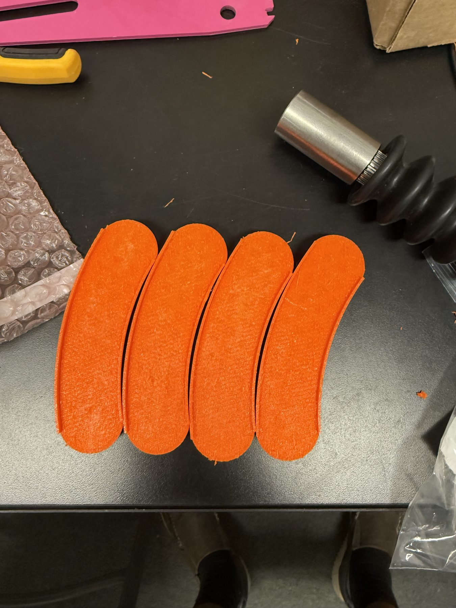

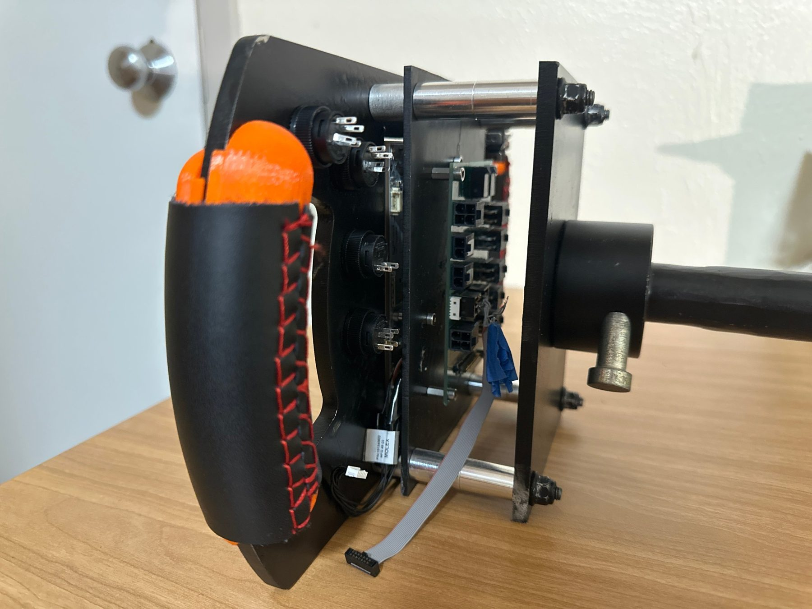
Results
- The screen moved off the dashboard and into the driver's line of sight, so glare no longer makes it unreadable.
- The wheel is 21% lighter than the old full-circle wheel and has 4 more buttons, and every control is reachable without letting go.
- The stress analysis showed a minimum safety factor of 2.4 under steering torque and accidental axial loads.
- It meets ASC rules on wheel shape, getting out of the car, and fastener security.